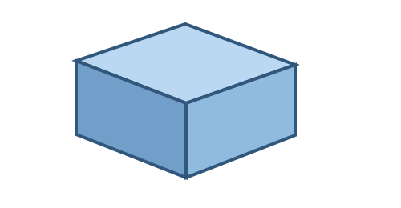

← Examples / 1 · Simple box
Small API regression fixture
1 · Simple box
A plain Python class with three dimensions and one Box.

Python source
"""Smallest SCPF regression example: one parameterized, editable Box."""
class SimpleBox:
length = 40.0
width = 30.0
height = 10.0
def build(self):
return Box(self.length, self.width, self.height)
SimpleBox()
Generated command sequence
parameters.addparameters.addparameters.addsketch.createsketch.rectangle.two_pointsketch.finishsolid.extrude